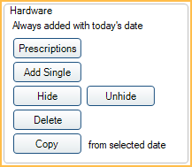
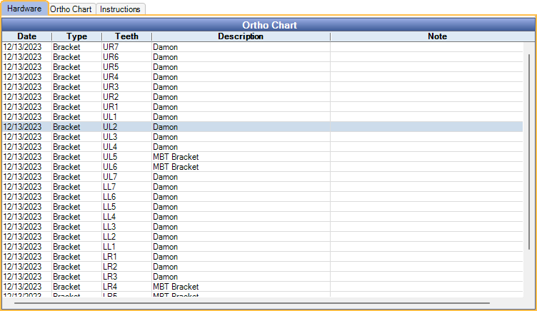

Ortho
Chart orthodontic hardware and track ortho treatment progress from the Ortho tab.
In the Chart Module, click the Ortho tab.

Users can choose to see only information relating to the patient's orthodontic treatment and hide general chart notes and procedures.
Enable Show Ortho button and tab in Chart Module in Preferences to use this feature.
Filters

Tooth chart ortho mode: Determines the view of the odontogram.
- Checked: Enables tooth chart ortho mode in the Ortho tab only. The odontogram displays the facial/buccal view of the teeth only.
- Unchecked: Disables tooth chart ortho mode.
Show Ortho grids: Determine if the ortho grids or progress notes are shown.
- Checked: Shows the Hardware and Ortho Chart tabs. Progress Notes are hidden.
- Unchecked: Shows Progress Notes. Hardware and Ortho Chart Tabs are hidden.
Show Graphics: Determine if ortho graphics (e.g., brackets) are shown on the Graphical Tooth Chart.
- Checked: Ortho graphics are enabled in all tabs of the Chart Module.
- Unchecked: Ortho graphics are disabled in all tabs of the Chart Module.
Show Hidden: Determine if Ortho hardware marked hidden is displayed on the Graphical Tooth Chart and listed in the Hardware tab.
- Checked: Hidden hardware is displayed when Show Graphics is checked and is listed in the Hardware tab.
- Unchecked: Hidden hardware is not displayed or listed.
Show Exam Date: The exam date that corresponds to the hardware items listed in the Hardware tab and Graphical Tooth Chart. Click to view a different exam date. Adding new hardware, prescriptions, or copying from an existing exam creates a new exam with today's date.
Hardware
Prescriptions: Click to chart Ortho Hardware using Ortho Prescriptions. Ortho Prescriptions are assigned to specific Ortho Hardware items and treatment areas. The Select Ortho Prescription window opens.

- Highlight prescriptions from the Available list and click Select to move to the Selected list. Multiple prescriptions can be added to the Selected list.
- Highlight items from the Selected list and click Remove to move prescription(s) from back to the Available list.
- Click OK to automatically chart Hardware based on the Selected Ortho Prescriptions.
Add Single: Select teeth and click to add Ortho Hardware. The Add Ortho Hardware window opens.

- Highlight hardware items to add.
- Click OK to add hardware items to the selected teeth.
Hide / Unhide: Select hardware items from the grid and click Hide to remove graphics from the tooth chart. Select hardware items and click Unhide to display hardware on the tooth chart.
Delete: Select hardware items from the grid and click to delete.
Copy: Select an exam date and hardware items from the grid and click to copy to a new exam with today's date. If no items are selected, all items from the previous exam date are copied to today's date.
Hardware Tab
Displays all hardware information for the selected exam date.
Double-click a hardware item to edit information or delete hardware.

Right-click selected rows to delete hardware.
Ortho Chart Tabs
The tabs displayed after the Hardware tab show the Ortho Chart tabs. Depending on Ortho Chart Setup, Setup Tabs, the labels of the tabs and number of tabs may differ. The default is one tab labeled Ortho Chart.
Information in these tabs is read-only. Double-click anywhere in the grid to launch the Ortho Chart window to make changes or add a new entry to the Ortho Chart.